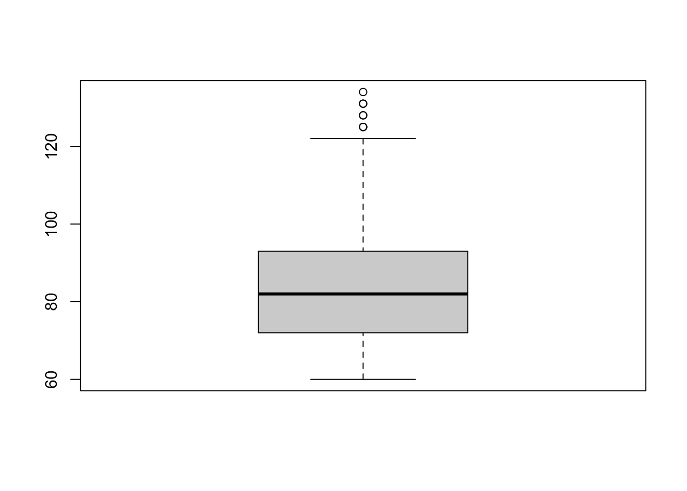
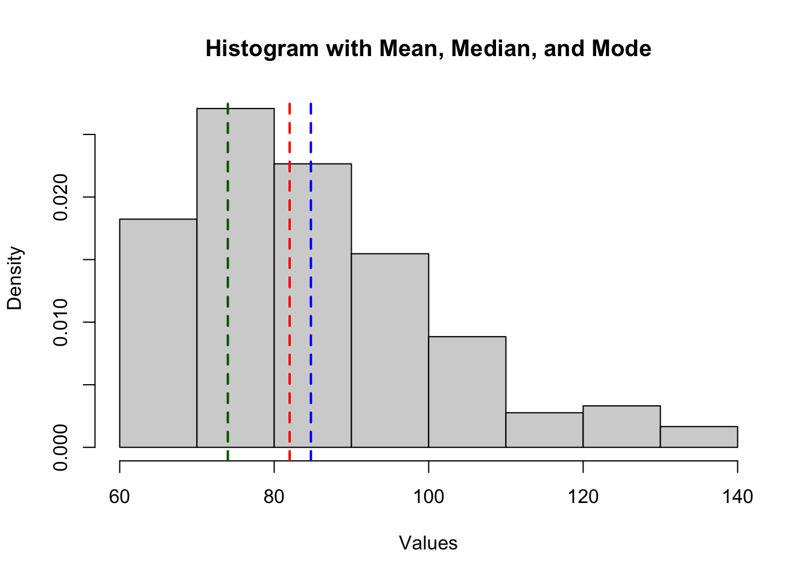
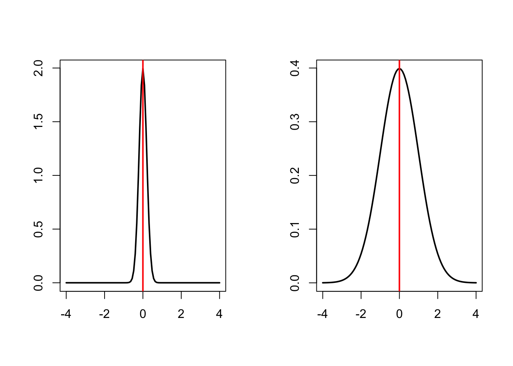
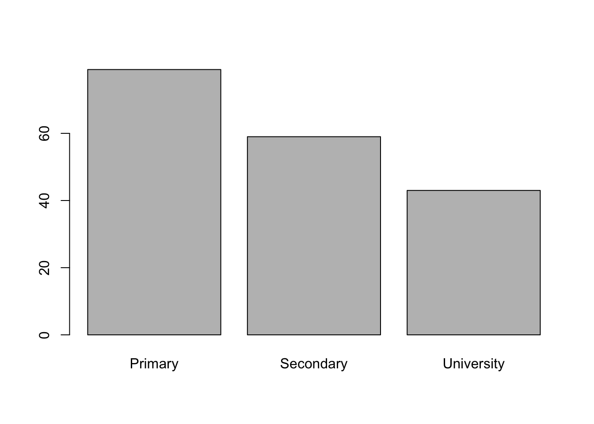
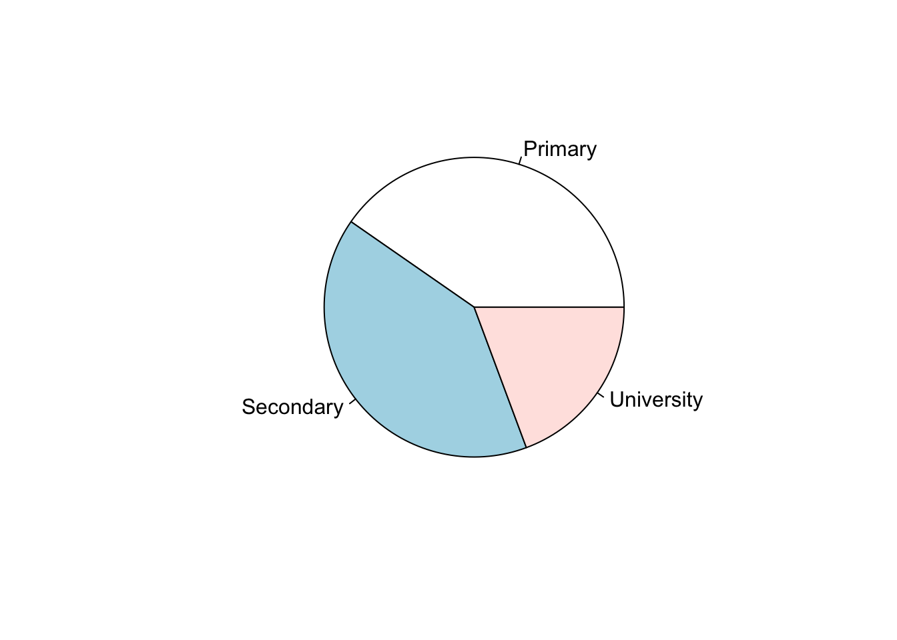
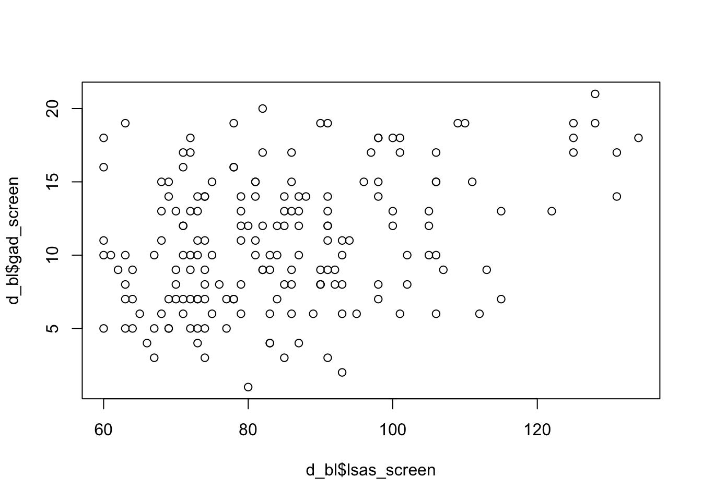
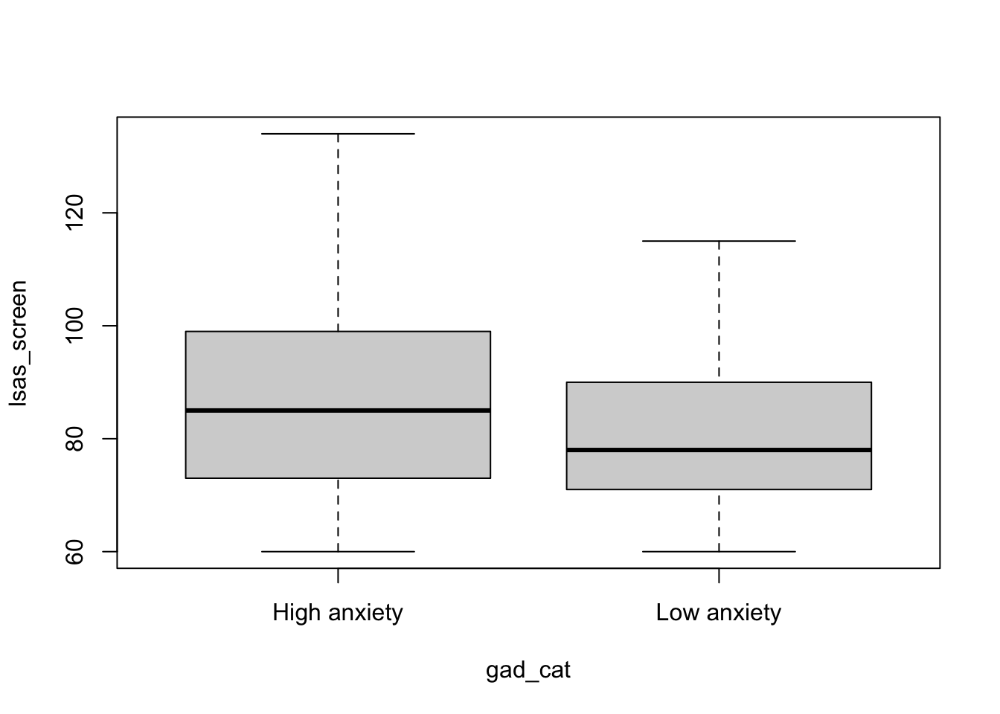
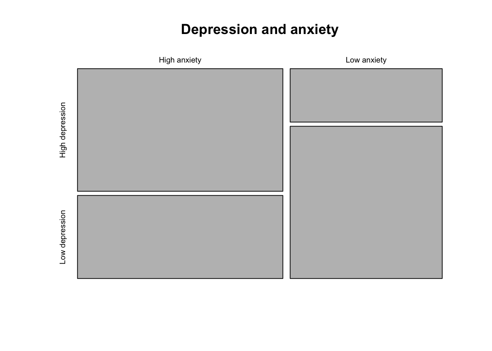

library(here)
library(tidyverse)
d <- read_csv(here("data", "steps_clean.csv"))Descriptive statistics
In this lab we will practice calculating and interpreting descriptive statistics using the STePS dataset. We start by loading the cleaned dataset saved in the Import and clean data lab.
We’ll start of doing some basic descriptive statistics of the baseline variables. We start by checking the variable names to identify the baseline variables.
colnames(d) [1] "id" "group" "lsas_screen" "gad_screen"
[5] "phq9_screen" "bbq_screen" "scs_screen" "dmrsodf_screen"
[9] "ders_screen" "pid_5_screen" "lsas_v1" "lsas_v2"
[13] "lsas_v3" "lsas_v4" "lsas_v5" "lsas_v6"
[17] "lsas_v7" "lsas_v8" "lsas_post" "gad_post"
[21] "phq9_post" "bbq_post" "scs_post" "dmrsodf_post"
[25] "ders_post" "lsas_fu6" "gad_fu6" "phq9_fu6"
[29] "bbq_fu6" "scs_fu6" "ders_fu6" "lsas_fu12"
[33] "gad_fu12" "phq9_fu12" "bbq_fu12" "scs_fu12"
[37] "ders_fu12" "trt" For easy handling, we’ll create a data frame containing only the baseline variables, ID, Group and all variables ending with the suffix “_screen”.
d_bl <- d |>
select(
id,
group,
lsas_screen,
gad_screen,
phq9_screen,
bbq_screen,
scs_screen,
dmrsodf_screen,
ders_screen,
pid_5_screen
)Or more efficiently (if variables are correctly named) we can use the ends_with() function from the tidyselect package:
d_bl <- d |>
select(
id,
group,
ends_with("_screen")
)
Exercise 1: Get an overview of the dataset
2.1 Use the functions described in the Import and clean data lab to get a quick overview of the dataset and give a brief summary of it.
Numeric data
We’ll start exploring descriptive statistics by examining baseline levels of the LSAS-questionnaire, which measures symptoms of social anxiety and was used as the outcome variable in the study.
Visual presentations
The simplest, and often most informative way, to get an overview of a variable is to produce a visual representation of its distribution. For uni-variable numeric variables, two common visualizations are histograms hist() and boxplots boxplot().
Histogram
A histogram is a graphical representation used to visualize the distribution of a numeric variable. It shows how data are spread across intervals (bins) and helps identify patterns such as central tendency, variability, skewness, and outliers.
| Feature | What It Tells You |
|---|---|
| Height of bars | Number of observations in each bin |
| Width of bars | Range of values grouped together |
| Shape | Symmetry, skewness, modality |
| Outliers | Bars isolated from the main group |
hist(d_bl$lsas_screen)
Boxplot
A boxplot (also called a box-and-whisker plot) is a compact, visual summary of the distribution, central tendency, and variability of a dataset.
| Component | Description |
|---|---|
| Minimum | Smallest value (excluding outliers) |
| Q1 (1st Quartile) | 25th percentile (lower hinge of the box) |
| Median (Q2) | 50th percentile (line inside the box) |
| Q3 (3rd Quartile) | 75th percentile (upper hinge of the box) |
| Maximum | Largest value (excluding outliers) |
boxplot(d_bl$lsas_screen)
Centrality measures
Sometimes we need more comprehensive summaries of our data. For this purpose, it is common to use centrality measures. Centrality measures are statistical summaries that describe the center or typical value of a dataset. They help summarize where most values lie and include:
Mean: The average of all values (sum of all values divided by the number of values).
Median: The middle value when data is ordered (or the average of the two middle numbers if the length of the vector is an even number).
Mode: The most frequently occurring value.
These measures provide insight into the distribution’s central tendency, helping you understand the “typical” case in your data.
Means, medians and outliers
The mean is sensitive to outliers, while the median is not. The values [1, 2, 3, 100] has a mean of 26.5. and a median of 2.5. None of them are “wrong”, but the usefulness of each measure depends on what you want your centrality measures to tell. However, with highly skewed variables (e.g. income), the median is usually viewed as more informative.
Now let’s use R to calculate some centrality measures for LSAS at baseline.
Getting the mean using mean()
mean(d_bl$lsas_screen)[1] 84.75138Getting the median using median()
median(d_bl$lsas_screen)[1] 82Getting the mode
Unlike mean() and median(), base R does not include a built-in mode() function for computing the statistical mode (i.e. the most frequent value). However, you can create one.
get_mode <- function(x) {
ux <- unique(x)
ux[which.max(tabulate(match(x, ux)))]
}
get_mode(d_bl$lsas_screen)[1] 74Much of this information could also be easily found using the summary() function.
summary(d_bl$lsas_screen) Min. 1st Qu. Median Mean 3rd Qu. Max.
60.00 72.00 82.00 84.75 93.00 134.00 Visualizing centrality measures
You could also plot the mean, median and mode over the histogram, to get a better sense of the data.
hist(d_bl$lsas_screen,
main = "Histogram with Mean, Median, and Mode",
xlab = "Values", probability = TRUE
)
# Add lines for mean, median, and mode
abline(v = mean(d_bl$lsas_screen), col = "blue", lwd = 2, lty = 2) # Mean
abline(v = median(d_bl$lsas_screen), col = "red", lwd = 2, lty = 2) # Median
abline(v = get_mode(d_bl$lsas_screen), col = "darkgreen", lwd = 2, lty = 2) # Mode
Exercise 2: Visualize centrality measures
2.2 Visualize the distribution of the PHQ-9 scale and the PID-5 scale and provide the mean, median and mode.
2.3 How does the centrality measures differ and why?
2.4 Reason on the pros and cons of the different centrality measures for these scales.
Spread measures
Centrality measures give information on the most typical value in the distribution, but no info on the spread of values. For example, the two distributions below have the same mean value (0), but different spread (standard deviation 0.2 vs. 1).

To get a summary of the spread of the data, we use different spread measures. Spread measures describe how much the data varies or is dispersed around a central value like the mean or median. They help you understand whether the values are tightly clustered or widely scattered. Commonly used spread measures include:
Range
range(): The difference between the maximum and minimum values. Simple but sensitive to outliers.\[\text{Range} = \max(X) - \min(X)\]
Interquartile Range (IQR)
IQR(): The range of the middle 50% of data (Q3 − Q1). More robust against extreme values.\[\mathrm{IQR} = Q_3 - Q_1\]
Variance
var(): The average of the squared deviations from the mean. It gives more weight to larger deviations.Population variance
\[ \sigma^2 = \frac{1}{n} \sum_{i=1}^{n} (x_i - \mu)^2 \]
Sample variance
\[ s^2 = \frac{1}{n-1} \sum_{i=1}^{n} (x_i - \bar{x})^2 \]
Standard Deviation (SD)
sd(): The square root of variance. It measures average distance from the mean and is widely used in statistics.Population SD
\[ \sigma = \sqrt{\frac{1}{n} \sum_{i=1}^{n} (x_i - \mu)^2} \]
Sample SD
\[ s = \sqrt{\frac{1}{n - 1} \sum_{i=1}^{n} (x_i - \bar{x})^2}\]
Population vs samplesThe population variance (\(\sigma^2\)) and standard deviation (\(\sigma\)) are used when you have data for the entire population — that is, every single value of interest is included.
The sample variance (\(s^2\)) and standard deviation (\(s\)) are used when you’re working with a subset (sample) of a larger population. It includes a correction (called Bessel’s correction) to account for the fact that samples tend to underestimate variability. The sample SD divides by \(n -1\) to compensate for the fact that we use \(\bar{x}\), an estimate of the true population mean (\(\mu\)). This correction makes the sample variance an unbiased estimator of the population variance.
The functions
sd() andvar()gives the sample standard deviation and variance.
Exercise 3: Calculate spread measures
2.5 Calculate spread measures for the LSAS-SR scale, what do they tell you and which ones do you think are most useful to describe the spread of the values. Motivate your answer briefly!
Overcourse:
2.6 Calculate the population variance and standard deviation. How do these differ from the ones given by the functions sd() and var().
2.7 Use only the first ten participants and compare the population and the sample variance and standard deviation of LSAS-SR. What do you find, and how do the results compare to those from exercise 2.6.
Categorical data
Now we’ll have a look at categorical data. First, we need to simulate some categorical data (since this is not included in the STePS dataset).
# Simulating a gender variable
n <- nrow(d_bl)
d_bl$gender <- rbinom(n, 1, 0.7)
d_bl$gender <- ifelse(d_bl$gender == 1, "Woman", "Man")
# Simulate an education variable
education_levels <- c("Primary", "Secondary", "University")
education_probs <- c(0.4, 0.4, 0.2) # Adjust probabilities as needed
d_bl$education <- sample(education_levels, size = n, replace = TRUE, prob = education_probs)
# Simulate an income variable
income_levels <- c("Low", "Medium", "High")
income_probs <- c(0.2, 0.6, 0.2) # Adjust probabilities as needed
d_bl$income <- sample(income_levels, size = n, replace = TRUE, prob = income_probs)The table() function provides a quick overview of the number of values in each category.
table(d_bl$gender)
Man Woman
44 137 table(d_bl$education)
Primary Secondary University
73 73 35 Dived by the number of rows, it gives proportion in each category.
table(d_bl$gender) / nrow(d_bl)
Man Woman
0.2430939 0.7569061 table(d_bl$education) / nrow(d_bl)
Primary Secondary University
0.4033149 0.4033149 0.1933702
Spread of categorical data
We do not need spread measures for categorical data, as all information there is about the distribution in provided in the counts or proportions. We can however calculate the variance of a proportion
Sample variance of a proportion
\[ \mathrm{Var}(\hat{p}) = \frac{\hat{p}(1-\hat{p}))}{n} \]
Visual presentations
As for numeric variables, visualizations can help get a better sense for the distribution of the data. Two common ways are barcharts and piecharts
Barcharts
The height of each bar gives the number of occurrences of each category. When you use the base function plot() on a factor level variable, it gives you a barchart.
plot(as.factor(d_bl$education))
Piecharts
A piechart shows the distribution of a categorical variable as a pie, with the size of each piece representing the proportion of each level of the categorical variable.
pie(table(d_bl$education))
Exercise 4: Visualize categorical data
2.8 Calculate the counts, proportions and percentages for the simulated income categories and visualize the distribution.
Bi-variable distributions
It can also be useful to investigate bi-variable distributions - i.e. the joint distribution of two variables - to get a sense of how variables in your data is related to each other.
Numeric by numeric distributions
For two numeric variables, the most common visualization is the scatter plot. It shows the distribution of each datapoint with one variable on the x-axis and the other on the y-axis. Using the plot() function with two numeric variables will give you a scatter plot.
plot(d_bl$lsas_screen, d_bl$gad_screen)
Numeric by categorical distributions
The joint distribution of a numeric and a categorical variable can be visualized as a stratified boxplots. For this let’s look at the distribution of LSAS scores for people with high generalized anxiety (GAD-7 ≥ 10 or more) vs low generalized anxiety (GAD-7 < 10).
# create a variable indicating if GAD-7 is 10 or more
d_bl$gad_cat <- ifelse(d_bl$gad_screen >= 10, "High anxiety", "Low anxiety")
boxplot(lsas_screen ~ gad_cat, data = d_bl)
Categorical by categorical distributions
All the information of the joint distribution of two categorical variables can be seen using a cross-table. For this let’s look at the distribution of high vs low depression (PHQ-9 ≥ 10 vs PHQ-9 <10 or less) against high vs low generalized anxiety.
d_bl$phq_cat <- ifelse(d_bl$phq9_screen >= 10, "High depression", "Low depression")
table(d_bl$gad_cat, d_bl$phq_cat)
High depression Low depression
High anxiety 62 42
Low anxiety 20 57Although all information about the distribution is available in the crosstable, you may still want to visualize this distribution. One way is to use a mosaic plot, which you can get by providing cross-table to the plot() function.
plot(table(d_bl$gad_cat, d_bl$phq_cat), main = "Depression and anxiety")
Descriptive statistics using the ‘tableone’ package
A convenient way to get descriptive statistics for a range of variables is to use the tableone package and the CreateTableOne() function. First let get some descriptives for the overall sample
# install.packages("tableone")
library(tableone)
# define the variables you want
vars <- c(
"lsas_screen",
"gad_screen",
"phq9_screen",
"bbq_screen",
"scs_screen",
"dmrsodf_screen",
"ders_screen",
"pid_5_screen",
"gender",
"education",
"income"
)
CreateTableOne(vars = vars, data = d_bl)
Overall
n 181
lsas_screen (mean (SD)) 84.75 (16.47)
gad_screen (mean (SD)) 10.86 (4.51)
phq9_screen (mean (SD)) 9.61 (4.37)
bbq_screen (mean (SD)) 39.64 (16.48)
scs_screen (mean (SD)) 27.66 (7.03)
dmrsodf_screen (mean (SD)) 267220994518069.59 (3595090797150460.50)
ders_screen (mean (SD)) 49.20 (13.43)
pid_5_screen (mean (SD)) 23.93 (8.51)
gender = Woman (%) 137 (75.7)
education (%)
Primary 73 (40.3)
Secondary 73 (40.3)
University 35 (19.3)
income (%)
High 29 (16.0)
Low 39 (21.5)
Medium 113 (62.4) We can also do this stratified by a categorical variable using the strata argument. Let’s have it by treatment group.
CreateTableOne(vars = vars, data = d_bl, strata = "group", test = FALSE) Stratified by group
0
n 60
lsas_screen (mean (SD)) 86.98 (18.99)
gad_screen (mean (SD)) 11.18 (4.50)
phq9_screen (mean (SD)) 10.35 (4.63)
bbq_screen (mean (SD)) 37.38 (17.10)
scs_screen (mean (SD)) 27.37 (7.04)
dmrsodf_screen (mean (SD)) 806116666706155.25 (6244152850195288.00)
ders_screen (mean (SD)) 50.70 (13.72)
pid_5_screen (mean (SD)) 25.07 (9.46)
gender = Woman (%) 46 (76.7)
education (%)
Primary 25 (41.7)
Secondary 23 (38.3)
University 12 (20.0)
income (%)
High 10 (16.7)
Low 11 (18.3)
Medium 39 (65.0)
Stratified by group
1 2
n 61 60
lsas_screen (mean (SD)) 83.08 (12.97) 84.22 (16.95)
gad_screen (mean (SD)) 10.97 (4.44) 10.42 (4.63)
phq9_screen (mean (SD)) 9.15 (4.05) 9.35 (4.40)
bbq_screen (mean (SD)) 42.03 (17.09) 39.45 (15.10)
scs_screen (mean (SD)) 27.15 (7.31) 28.48 (6.76)
dmrsodf_screen (mean (SD)) 44885.95 (16035.54) 44388.20 (14850.76)
ders_screen (mean (SD)) 46.74 (13.60) 50.22 (12.83)
pid_5_screen (mean (SD)) 22.34 (7.80) 24.40 (8.08)
gender = Woman (%) 45 (73.8) 46 (76.7)
education (%)
Primary 29 (47.5) 19 (31.7)
Secondary 21 (34.4) 29 (48.3)
University 11 (18.0) 12 (20.0)
income (%)
High 9 (14.8) 10 (16.7)
Low 16 (26.2) 12 (20.0)
Medium 36 (59.0) 38 (63.3)
Exercise 5: Visualize bi-variable distributions
2.9 Visualize the joint distribution of GAD-7 and PHQ-9 as numeric variables and describe what you see
2.10 Visualize the distribution of of LSAS scores by income level and describe what you see
2.11 Create a variable for high vs. low DERS scores and investigate the joint distribution of this variable and phq_cat (that we created in an earlier example)
2.12 Create a table using the tableone package to show descriptives statistics stratified by high vs low depression levels. Briefly interpret what you see.
Save output
write_rds(d_bl, here("data", "steps_baseline.rds"))